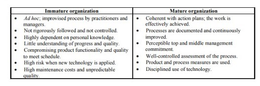
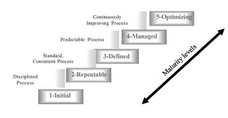
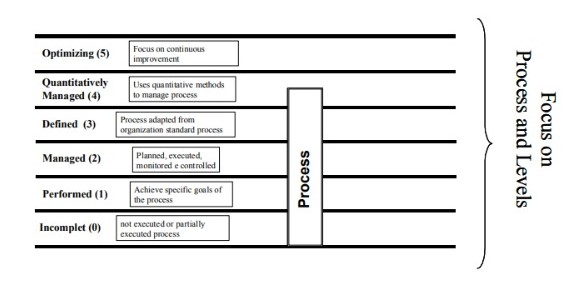
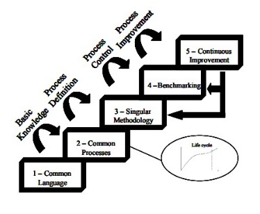
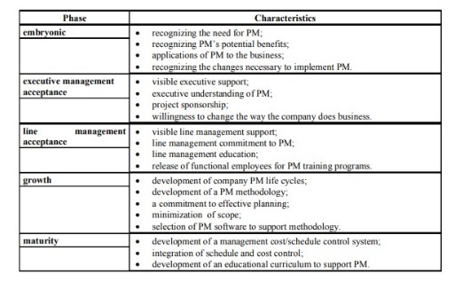

would always be in the direction of an accountable project office with responsibility for managing all project. This is an error common to all systems of thought with large projection, to think that if something is good, more is necessarily better. Instead, the project office should reflect the organizational structure and the allocation of projects inside the organization. The mere existence of a project office, no matter what type, represents a commitment on the part of the organization to improve project management. The most successful project offices specialize in both project management and evangelism, that is, they fight for their values (Verzuh, 1999).
The implementation of formal efficiency procedures is quite new in IT projects. There are different approaches regarding the best practices in the IT project management (Carvalho et al., 2003; Laurindo et al., 2003).
Humphrey (1989) identifies maturity levels in the IT project development process, based on the managerial behavior found in companies. The fundamental concepts of the maturity process derive from the belief that the development management process is evolutionary. Paulk et al. (1995) identify the distinguishing characteristics between immature and mature organizations, as shown in Table 4.2.
Table 4.2. Immature organization mature organization (Paulk et al., 1995)

The CMM (Humphrey, 1989; Paulk et al., 1995; Pessôa and Spinola, 1997) was developed by SEI — the Software Engineering Institute, of Carnegie Mellon University, and presents five maturity levels, each corresponding to a set of structural requirements for key process areas. (Figure 4.2)
Although each project is unique, it could be organized in a process to be applied in other projects. IT projects managers used to apply a “methodology,” i.e. they establish the steps to be followed in order to develop a system. Another singular characteristic is the dynamic technologies breakthrough that demands continuous improvements in the development methods and management of changing process, as described in CMM model, at level 5, the highest level of maturity.
The CMM second level has a consistent project management structure and the goal of this level is to deliver projects on time. To perform this, the model have several points that must be achieved, like effort and size estimation, strong process control (such as periodic meetings between technical people and managers), and several measures to show project status more clearly.
CMM is not an adequate reference for the assessment of internal methodologies, since it was not conceived to perform this kind of analysis. ISO 15504 (1998) proposed the standard project SPICE as a more appropriated model to evaluate maturity level of specific processes. While CMM level of maturity specifies a set of processes that have to be performed, ISO 15504 establishes maturity levels for each individual process: level 0-incomplete; level 1-performed; level 2-managed; level 3-established; level 4-predictable; level 5- optimizing. This is a different approach of CMM, since an organization does not perform a maturity level, but has a maturity profile: a maturity level is measured for each specific process. This new approach is a very useful to the organization
Figure 4.2. Maturity levels (adapted from Paulk et al., 1995)

perspective because one can easily measure strong and weak points of their process and plan improvement activities. Furthermore, from the companie’s point of view, it is easier to understand staged levels as the performed processes are already predefined.
The SPICE approach defined in standard ISO 15504 (1998) had originally influenced CMM for Systems Engineering, published in 1995, and more recently influenced CMM I (CMM-I1; CMM-I2), just published in 2002. CMM-I, the integration model, was enhanced in two dimensions: scope dimension and evaluation dimension.
In the scope dimension, this new model incorporated other published models and covers all project activities, not only software, as the original software CMM did, but also other engineering fields. In the evaluation dimension, CMM-Il incorporated both approaches: the traditional (called staged CMM) and the maturity profile (called continuous CMM). Figure 4.3 shows the continuous CMM-I representation to be compatible with ISO/IEC 15504 standard.
CMM-I (and software CMM) considers that maturity level is an organizational characteristic and it is independent of the professionals involved. Nowadays, there is a strong tendency towards the adoption of CMM-I models, which were sponsored by Department of Defense (DoD), meanwhile, ISO standards are less used.
Figure 4.3. Continuous maturity process representation in CMM-I (adapted from CMM-I1, 2002)

Project Management plays an important role in the competitive scenario, and achieved in the 1990s the status of methodology. The model proposed by Project Management Institute - PMI (2000), called Project Management Body of Knowledge (PMBoK), provides a framework to manage project efficiency, balancing scope expectations and the available resources in nine key areas (Rabechini & Carvalho, 1999).
Nevertheless, the PMBoK framework cannot provide a standard benchmark for project management capability as CMM to software engineering capabilities. In order to extend the Capability Maturity Model (CMM) to project management, Kerzner (2000, 2001) proposes a Project Management Maturity Model (PMMM).
The PMMM differs in many aspects from the CMM, but this framework also introduces benchmarking instruments for measuring an organization’s progress along the maturity model, detailing five levels of development for achieving maturity, as shown in Figure 4.4 (Carvalho et al., 2003).
It is important to highlight the differences in terminology between the CMM and PMMM, (compare Figures 4.3 and 4.4) which could lead to misunderstanding when both models are being implemented in the IT domain of the same organization.
Figure 4.4. Project Management Maturity Model (adapted from Kerzner, 2001)

PMMM addresses the key knowledge areas across the project management process, in compliance with PMBoK, and integrates them with the Project Management Office — PMO in the strategic level.
Kerzner (2000) identifies a life cycle in PMMM level 2, common processes, which could be broken into five phases, as shown in Figure 4.5. It is important to note that some simultaneity among the phases can occur.
The embryonic phase means that the organization starts to recognize the benefits of project management — PM, usually by lower and middle levels of management. The two next phases are achieved when the PM concepts are
Table 4.3. Life cycle phase characteristics (Kezner, 2001)
Figure 4.5. Life cycle phases (adapted from Kerzner, 2001)
